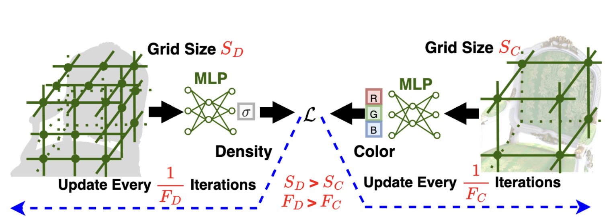

|
Boyang (Tony) Yu I'm a 3rd-year Ph.D. student in Electrical and Computer Engineering at Rice University, advised by Prof. Guha Balakrishnan. I'm part of the Rice Visual Intelligence Group and the Digital Health Institute.I have also been fortunate to collaborate with Prof. Ravi Ramamoorthi Prof. Ravi Ramamoorthi , who advised my work on TranSplat. My research is centered on the intersection of deep learning, computer vision, and computer graphics. I focus on creating highly efficient algorithms that reduce computational overhead in neural rendering and radiance transfer, enabling real-time photorealistic relighting for dynamic 3D intelligence applications. I was a research intern at the Media Analytics team at NEC Laboratories America (2025) in Manmohan Chandraker's Group, working on a physics-constrained, traffic-aware pedestrian behavior simulator for real-world driving videos. I received my M.S. and B.S. in ECE from Rice University. |
{kind=link}
News
|
ResearchI'm interested in computer vision, deep learning, computer graphics, neural rendering, and radiance transfer. My focus is on efficient algorithms for real-time photorealistic relighting in dynamic 3D scenes. Some papers are highlighted. |

|
TranSplat: Instant Object Relighting in Gaussian Splatting via Spherical Harmonic Radiance Transfer
Boyang (Tony) Yu, Yanlin Jin, Yun He, Akshat Dave, Ravi Ramamoorthi, Guha Balakrishnan ICCP, 2026 project page / arXiv A BRDF-free radiance transfer method that analytically modulates spherical harmonic appearance coefficients of 2D Gaussian surfels using per-normal irradiance ratios from source and target environment maps. Includes a specularity-aware dual-path SH transfer strategy and a lightweight SH-domain self-shadowing module. Operates as a post-processing step with no GS retraining required, completing relighting in under one second. |
|
 |
Instant-3D: Instant Neural Radiance Field Training Towards On-Device AR/VR 3D Reconstruction
Sixu Li, Chaojian Li, Wenbo Zhu, Boyang (Tony) Yu, Yang (Katie) Zhao, Cheng Wan, Haoran You, Huihong Shi, Yingyan (Celine) Lin ISCA, 2023 paper The first algorithm-hardware co-design acceleration framework that achieves instant on-device NeRF training for AR/VR 3D reconstruction. |
|
Website template from Jon Barron. |